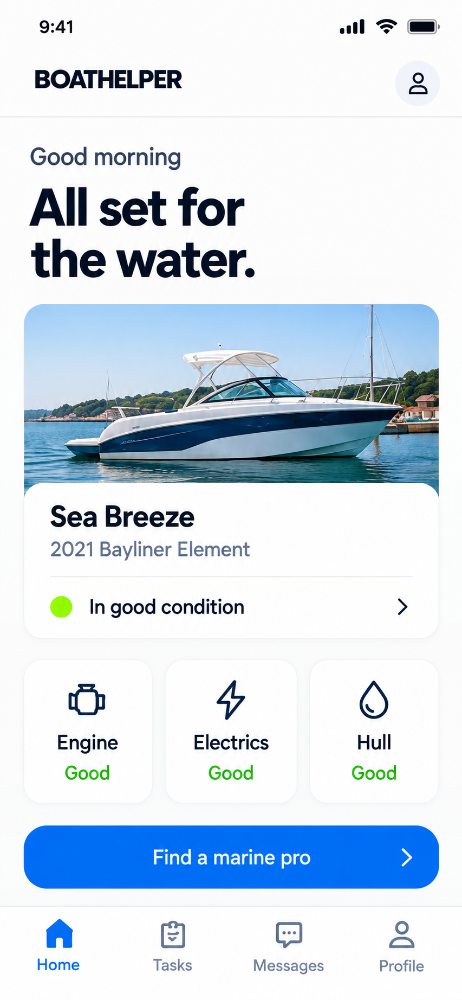
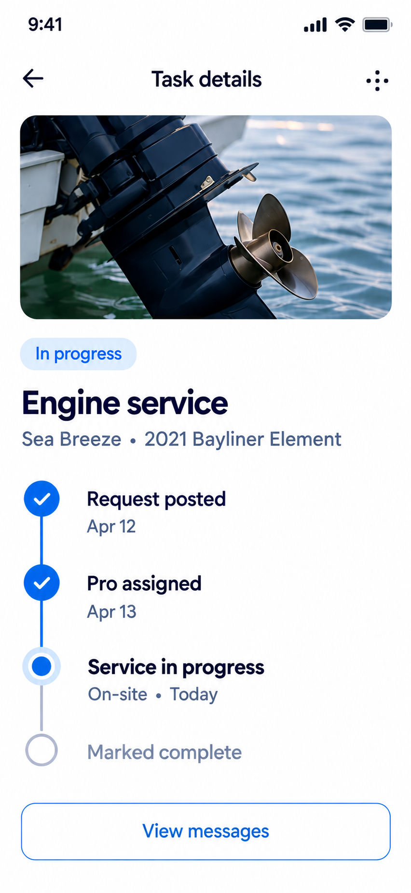
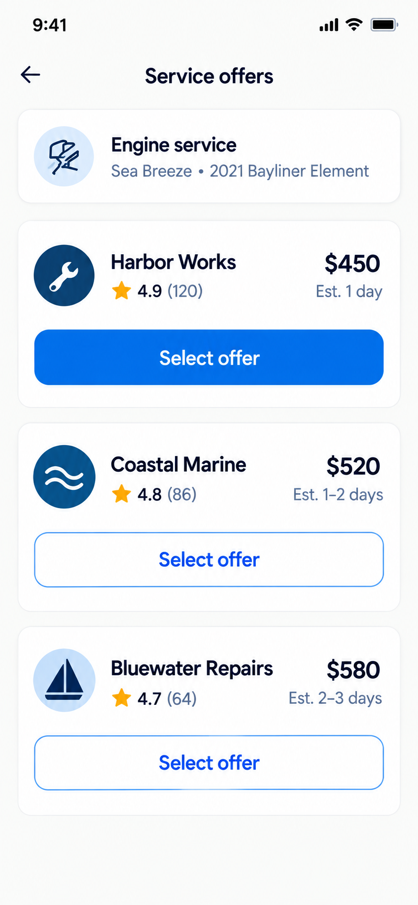

BoatHelperApp
Boats, tasks, offers, chats, profiles, progress, approval and reviews for BoatOwners.
BoatHelper connects BoatOwners with trusted BoatCraftsmen for repairs and maintenance—from publishing a task and comparing offers to approving work and completing payment.
BoatHelper is designed as a BoatOwner app, a separate Craftsman app and an administration system. This case study covers only the BoatOwner experience.
Owners can publish tasks for painting, varnishing, engine repairs, electrical work and other services on one or more boats.
Boats, tasks, offers, chats, profiles, progress, approval and reviews for BoatOwners.
Open tasks, bids, active work, completion evidence, commissions and payouts.
User moderation, payout processing, marketplace revenue and activity metrics.
Owners rely on referrals, calls, informal quotes and scattered photos with no single record of the task, agreement or outcome.
Finding an available and capable craftsman is difficult without an existing marine network.
Price, proposed work, reputation and availability are rarely presented together.
Photos, messages, agreements, payment and service history live in separate places.
The evidence comes from the BoatHelper PRD, sixteen required BoatOwner use cases and the data model. No unsupported interviews are claimed.
Tasks, images and maintenance history must stay attached to the correct motorboat or sailboat.
Owners need price, written scope, provider profile and chat context before selecting a craftsman.
Portfolios, completed work, average ratings and reviews reduce uncertainty.
Monthly category averages help owners evaluate offers without entering a budget.
Payment begins only after the owner reviews the result and explicitly accepts the work.
Craftsman contact details remain hidden until an agreement prevents off-platform transactions.
The product direction connects the work before, during and after hiring instead of stopping at discovery.
A portfolio matters before selection. Contact information becomes appropriate after agreement. Completion photos matter before approval. Payment follows acceptance.
The prototype begins on Home with a specific owner already logged in. The experience uses the required 393 × 852 iPhone 16 canvas.



Each boat becomes a durable home for specifications, active tasks and completed service history, supporting both single-boat and multi-boat owners.
Offer cards combine price and written scope with rating context. Profiles progressively add portfolio images, categories, reviews and completed tasks.
A task may receive several bids. Offer-specific conversations preserve context and prevent messages from becoming ambiguous.
The owner reviews completion evidence before accepting the work. Only then is the stored card charged, BoatHelper keeps 10% and the craftsman receives 90%.
The resulting direction connects boat management, task publishing, offer evaluation, communication, agreement, progress, completion and reputation.
Trust is created by the relationship between information and timing.
The interface must help an owner understand the task, judge unfamiliar providers, preserve agreement context, verify the result and feel confident at payment approval.
Next, I would test task creation, offer comparison, status understanding, price statistics and completion approval with owners of both motorboats and sailboats across different experience levels.